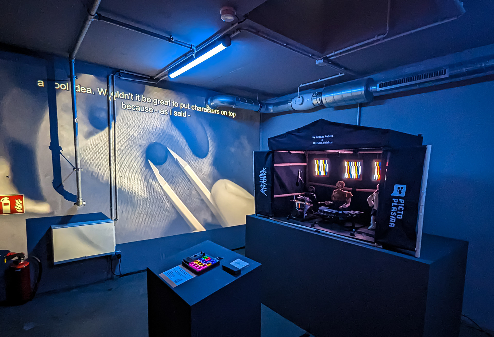

Mekanika
Mekanika is the world's first robotic puppet rock band, conceived as a 'family project'; a collaboration between Dr. David R. Valeiras and Cabeza Patata Studio.
Here we document the creation process, including the robotics, puppetry, and their overlap, as well as the World Premiere at Pictoplasma Festival in Berlin, 2023.


Mekanika is a three-piece band made up of a Drummer, Metallophone player, and an interchangeable Music Box. The musicians are controlled with servo motors and have different movements that allow them to play a range of songs automatically.


The concert experience is interactive so that, as well as watching the puppets play their instruments, the audience can control the music and light show themself.

A MIDI Keyboard stands in front of the stage so any audience member can control the tempo and intensity of the music and lights, as well as the different displays on LED panels. They can even become a digital puppet master, holding up different characters' arms to pause the play.


Everything is programmed with Arduinos, allowing the flexibility to adjust the programming and allow for different types of interactions and musical encounters.